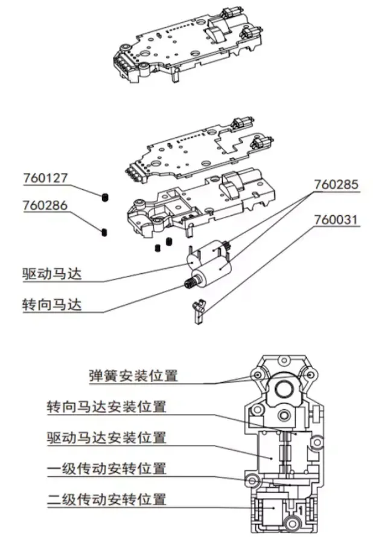
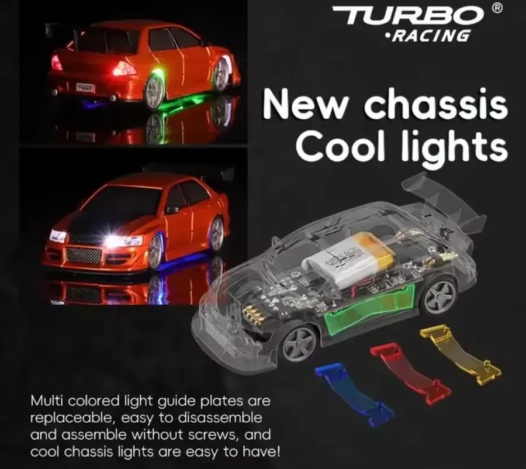

Direction
Un trim correct centre les roues sans forcer la mécanique. Si tu dois pousser le trim à fond, quelque chose est de travers : vérifie la biellette avant de compenser à la radio.
Matériel · fiche de référence
Le châssis TC-06 est le meilleur que Turbo Racing propose aujourd’hui. Trois modèles le partagent : C76, C76LE et C78. Autant prendre la moins chère — pour une course équitable entre amis, mieux vaut le même châssis pour tous, quitte à se différencier à la peinture.
Pourquoi la C76 plutôt qu’une autre : la C76, la C76LE et la C78 utilisent exactement le même châssis TC-06 et la même mécanique. Seule la carrosserie change. La C76 est la moins chère des trois (≈ 85 € contre 95 et 100 €) : à performance identique, c’est le choix rationnel — et le bon choix pour que tous les pilotes d’une même course roulent à armes égales.
 Carrosserie
Vis
Carte électronique
Coque supérieure
Transmission · 2e étage
Transmission · 1er étage
Train arrière
Coque inférieure
Vis sans tête
Ressort
Ensemble direction
Carrosserie
Vis
Carte électronique
Coque supérieure
Transmission · 2e étage
Transmission · 1er étage
Train arrière
Coque inférieure
Vis sans tête
Ressort
Ensemble direction
Fiche technique
Les chiffres constructeur, rassemblés au même endroit. Un seul mérite une précision : l’autonomie varie avec le niveau de puissance et le style de conduite. Compte entre 20 et 30 minutes selon l’usage, selon le niveau de puissance et le style de conduite.
Sources : fiches revendeurs et documentation Turbo Racing, relevées en 2026.

Moteur de propulsion Moteur de direction Logement du ressort Logement moteur de direction Logement moteur de propulsion Transmission · 1er étage Transmission · 2e étage
Et quand la LED rouge s’éteint, c’est chargé.
Voiture ensuite. Extinction dans l’ordre inverse.
ST.TRIM ajusté pour qu’elle roule droit toute seule.
Laisse refroidir, puis recharge juste 5 minutes pour la préserver.
Diagnostic
Un trim correct centre les roues sans forcer la mécanique. Si tu dois pousser le trim à fond, quelque chose est de travers : vérifie la biellette avant de compenser à la radio.
Cheveux et poussières sont ses premiers ennemis. Retire-les à la pincette après chaque batterie : c’est trente secondes, et c’est la première cause de perte de vitesse.
Propreté et mécanique libre comptent plus qu’une modification radicale. Un coup de chiffon humide sur la gomme redonne plus de grip que n’importe quel produit miracle.
| Modèle | Châssis | Prix | Différence réelle |
|---|---|---|---|
| C76 | TC-06 | ≈ 85 € | Aucune, c’est la base — et la moins chère |
| C76LE | TC-06 | ≈ 95 € | Carrosserie plus détaillée uniquement |
| C78 | TC-06 | ≈ 100 € | Carrosserie plus détaillée uniquement |
La technique de pilotage, maintenant.
Réglages & pilotage